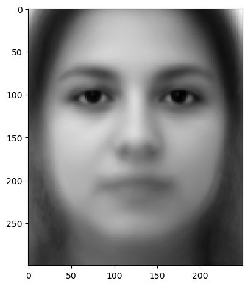
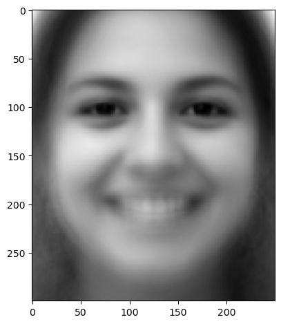
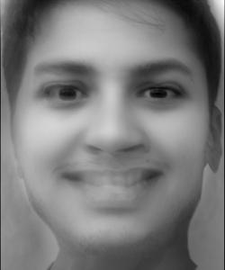
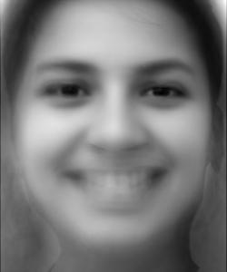
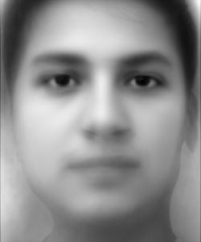

Mean Female Neutral and Smiling Faces




Caricature: Myself as a Woman
Smiling woman Caricature: Failure due to sharp features

Note that the failure here is due to the sharp difference between my shut mouth and a smile. This can be remedied
by dissolving the images together more, which gives:

Separately, the morph looks horrifying. It is goofy to see George Clooney morph like this though.


